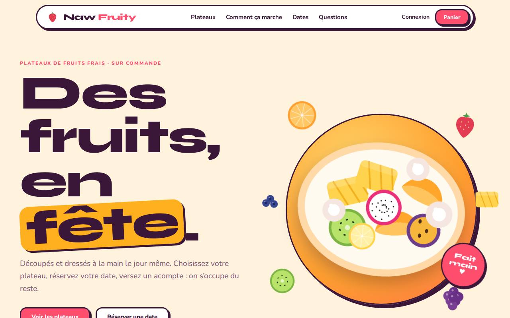

Proposition 1
Solaire
Joyeux et coloré : des fruits qui flottent, des formes franches, un ton léger. Parfait pour les familles, les anniversaires, les réseaux sociaux.
- Cartes colorées à bord franc
- Ambiance fête et partage